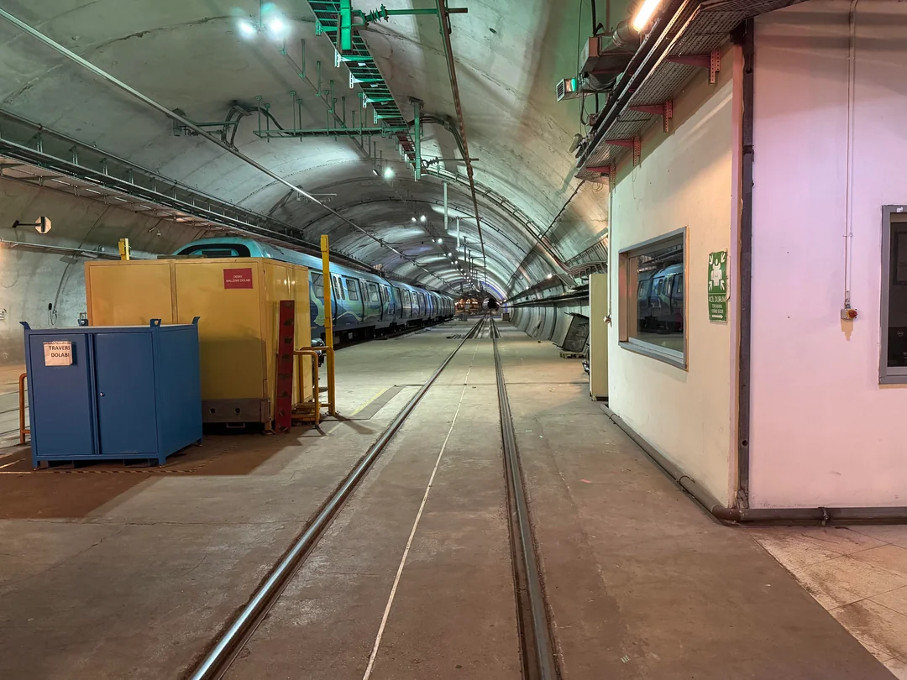
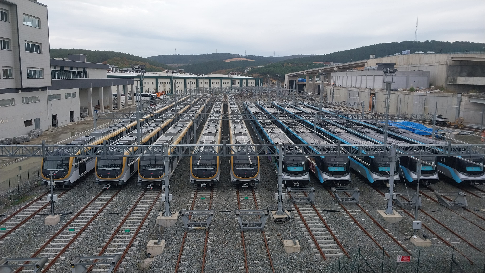
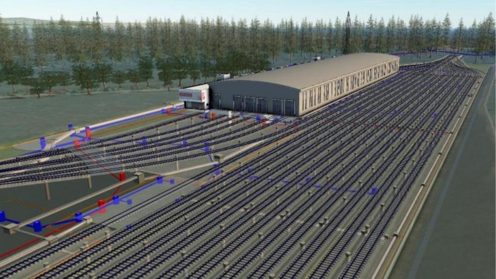

M4 hattının depo sahası Maltepe'de yer almaktadır.
Hizmet verdiği hat: M4

Anadolu Yakası raylı sistem hatlarının işletmedeki ve planlanan depo sahaları.
M4 hattının depo sahası Maltepe'de yer almaktadır.
Hizmet verdiği hat: M4

M5 ve M8 hatlarının depo sahası ve kumanda merkezi ortak olarak bu yerleşkede bulunmaktadır.
Hizmet verdiği hatlar: M5, M8

M4/M10 uzatması kapsamında Kurtköy YHT/ViaPort istasyonundan sonra yeni bir depo sahası planlanmaktadır.
Planlanan hatlar: M4, M10
